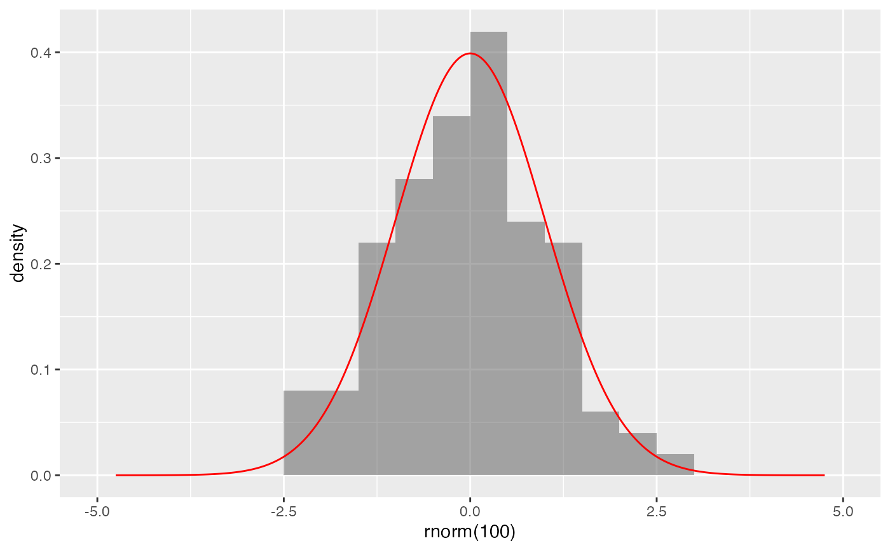
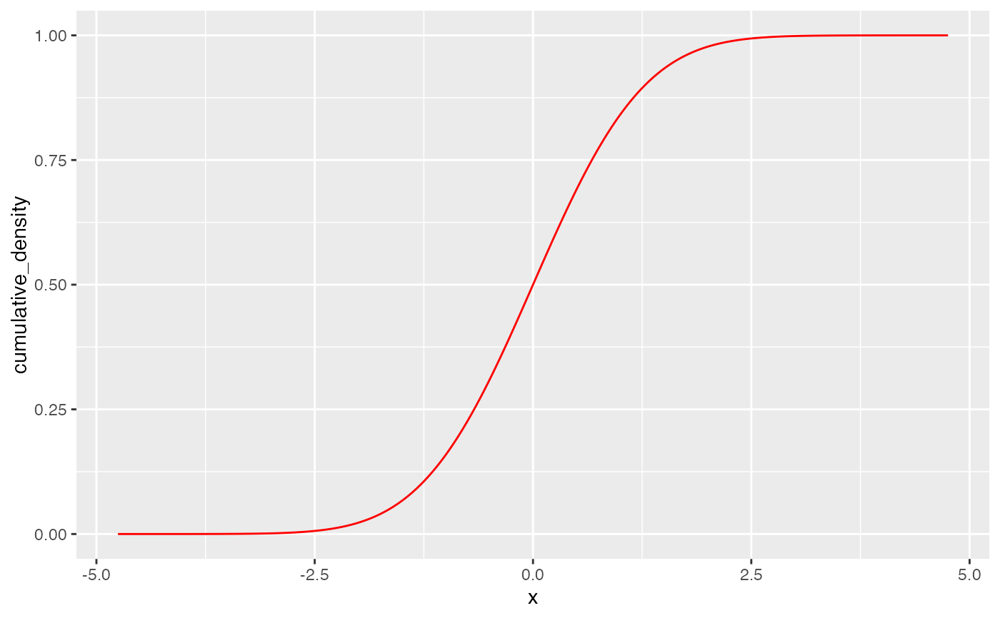
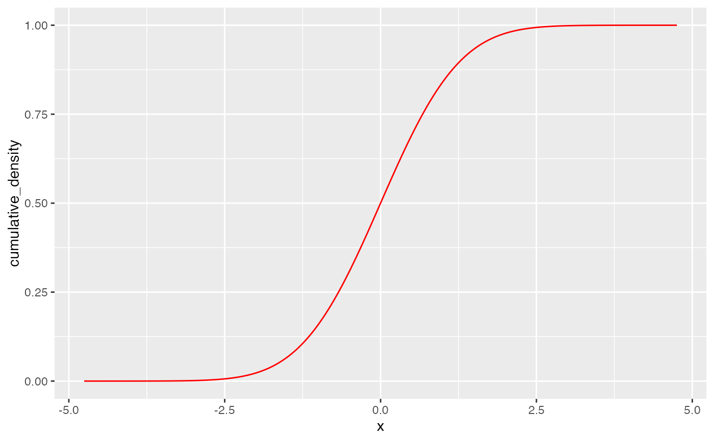

Create a layer displaying a probability distribution.
Arguments
- object
a gg object.
- dist
A character string providing the name of a distribution. Any distribution for which the functions with names formed by prepending "d", "p", or "q" to
distexist can be used.- ...
additional arguments passed both to the distribution functions and to the layer. Note: Possible ambiguities using
paramsor by preceding plot argument withplot_.- xlim
A numeric vector of length 2 providing lower and upper bounds for the portion of the distribution that will be displayed. The default is to attempt to determine reasonable bounds using quantiles of the distribution.
- kind
One of
"density","cdf","qq","qqstep", or"histogram"describing what kind of plot to create.- resolution
An integer specifying the number of points to use for creating the plot.
- eps
a (small) numeric value. When other defaults are not available, the distribution is processed from the
epsto1 - epsquantiles.- params
a list of parameters for the distribution.
Examples
gf_dhistogram(~ rnorm(100), bins = 20) |>
gf_dist("norm", color = "red")

# shading tails -- but see pdist() for this
gf_dist("norm", fill = ~ (abs(x) <= 2), geom = "area")
 gf_dist("norm", color = "red", kind = "cdf")

gf_dist("norm", fill = "red", kind = "histogram")
#> `stat_bin()` using `bins = 30`. Pick better value `binwidth`.
gf_dist("norm", color = "red", kind = "qqstep", resolution = 25) |>
gf_dist("norm", color = "black", kind = "qq", resolution = 25, linewidth = 2, alpha = 0.5)
# size is used as parameter for binomial distribution
gf_dist("binom", size = 20, prob = 0.25)
# If we want to adjust size argument for plots, we have two choices:
gf_dist("binom", size = 20, prob = 0.25, plot_size = 2)
gf_dist("binom", params = list(size = 20, prob = 0.25), size = 2)
gf_dist("norm", color = "red", kind = "cdf")

gf_dist("norm", fill = "red", kind = "histogram")
#> `stat_bin()` using `bins = 30`. Pick better value `binwidth`.
gf_dist("norm", color = "red", kind = "qqstep", resolution = 25) |>
gf_dist("norm", color = "black", kind = "qq", resolution = 25, linewidth = 2, alpha = 0.5)
# size is used as parameter for binomial distribution
gf_dist("binom", size = 20, prob = 0.25)
# If we want to adjust size argument for plots, we have two choices:
gf_dist("binom", size = 20, prob = 0.25, plot_size = 2)
gf_dist("binom", params = list(size = 20, prob = 0.25), size = 2)